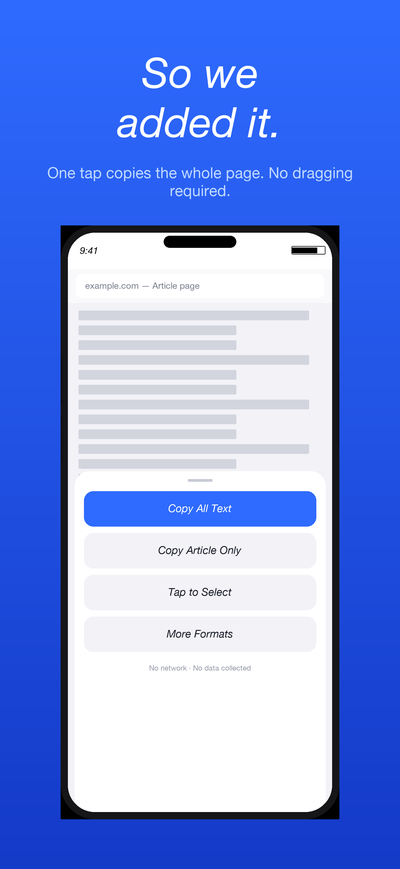
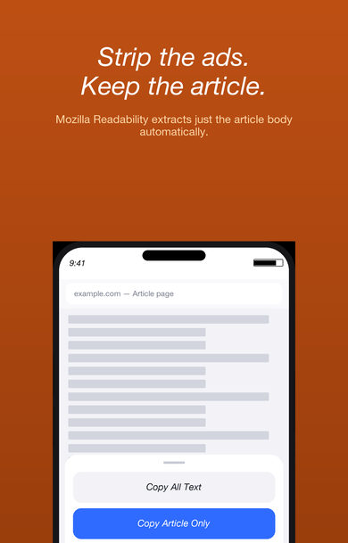
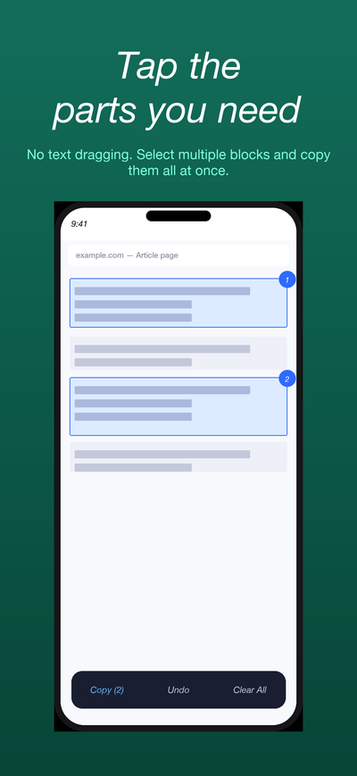
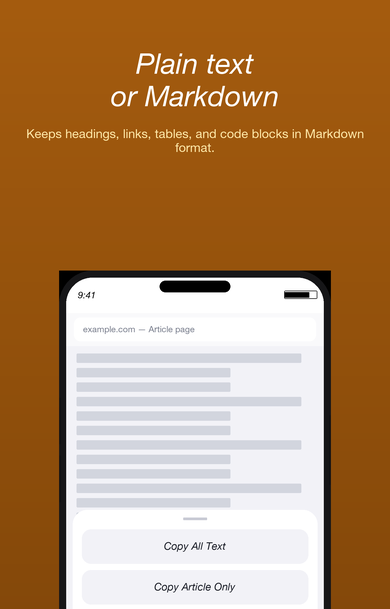

Getting started: enabling the extension
You only need to do this once.
- Open the Settings app on your iPhone
- Go to Apps → Safari → Extensions
- Turn on Copy All: Text
- Select Allow for All Websites (the extension only runs when you tap its button)
1. Copy All Text

Copies the page text readable in Safari
Tap Copy All Text in the popup to copy everything readable on the page to your clipboard in one go.
- Shows the character count and a preview after copying
- If you have text selected on the page, only that selection is copied
- Pages over 50,000 characters show a confirmation before processing
2. Copy Article Only

Strips ads, menus, and footers — keeps the article
Uses Mozilla Readability to extract just the article body. Works well for news articles, blog posts, and documentation pages.
- Automatically removes ads, navigation, and footer clutter
- Falls back to full-page copy if the article body can't be detected
- The preview indicates when a fallback has occurred
3. Tap to Select

Tap page regions instead of dragging text handles
A different approach to selection: tap meaningful blocks on the page and copy one or more regions together.
- Tap to select, tap again to deselect — multiple regions are copied in order
- Long-press to switch between parent and child element candidates
- Tap Copy in the floating bar to copy all selected regions
- All changes to the page are removed when you exit
4. More formats
Open More formats in the popup for the following options.

Copy as Markdown
Keeps headings, links, lists, tables, and code blocks in Markdown format.
Copy for AI
Combines the article, title, URL, and an instruction into a format ready to paste into an AI chat. Everything is processed on your device — nothing is sent anywhere.
Clean Copy
Removes cookie banners, share buttons, subscription prompts, and repeated menu text using rule-based processing — separate from the Readability-based article extraction.
Settings
Tap the settings icon in the popup.
- Append URL: choose whether to add the URL at the end, or the title and URL at the top of the copied text (default: off)
- Copy for AI URL: the URL is included by default in Copy for AI (can be turned off before copying)
Frequently asked questions
The extension icon doesn't appear
Make sure Copy All: Text is enabled in Settings → Apps → Safari → Extensions. Once enabled, it appears under the Extensions button (the "AA" button) in the address bar.
"Cannot copy" message appears
The extension cannot run on Safari's internal pages (Start Page, App Store, settings), PDF viewer, or pages that haven't finished loading.
Copy Article Only returns very little text
Article detection has limits. For pages that aren't articles (e-commerce, portals, etc.), use Copy All Text or Tap to Select instead.
Content behind a login isn't copied
Content loaded lazily after login, or content inside Shadow DOM, may not be retrieved. Copy what was captured and check the preview for what's missing.
Why is the app free?
This is a small utility project. It contains no ads, analytics, accounts, or network communication. It will remain free.
Is my browsing history saved?
No. The extension copies text to your clipboard and does nothing else. Only your settings (URL append preference, etc.) are saved locally on your device.
Contact
For bug reports, requests, or questions, please email us. We respond in both Japanese and English.